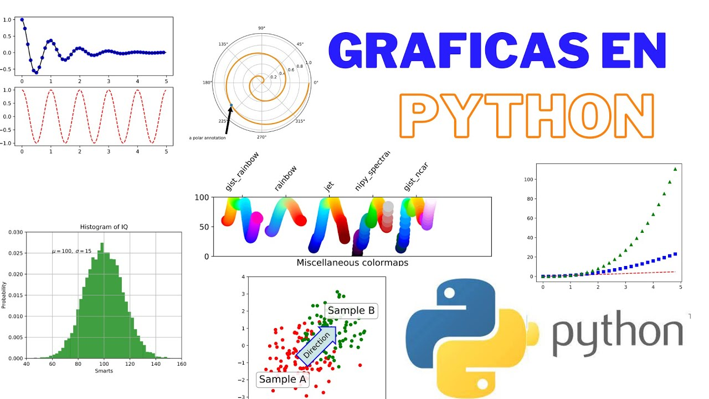

Catálogo de Proyectos
1. Optimización de Consultas Académicas
Descripción: Rediseño de la base de datos de la facultad utilizando Oracle SQL para mejorar los tiempos de respuesta en la búsqueda de alumnos.
Categoría: Base de Datos | Estado: Finalizado
Ver detalle del proyecto
2. Automatización de Planillas de Asistencia
Descripción: Desarrollo de macros en Excel con VBA para registrar automáticamente las asistencias y calcular porcentajes de regularidad.
Categoría: Macros y Planillas | Estado: En curso
Ver detalle del proyecto
3. Script de Respaldo de Servidores
Descripción: Creación de un script en Bash para realizar copias de seguridad de los trabajos prácticos de los alumnos en servidores Linux.
Categoría: Scripting | Estado: Finalizado
Ver detalle del proyecto
4. Análisis de Rendimiento Estudiantil

Descripción: Programa desarrollado en Python para leer notas y generar gráficos sobre el rendimiento de las distintas comisiones.
Categoría: Programación | Estado: En curso
Ver detalle del proyecto
5. Sistema de Gestión Bibliotecaria
Descripción: Diseño de tablas y relaciones para administrar el préstamo y devolución de libros de la biblioteca de la facultad.
Categoría: Base de Datos | Estado: Finalizado
Ver detalle del proyecto